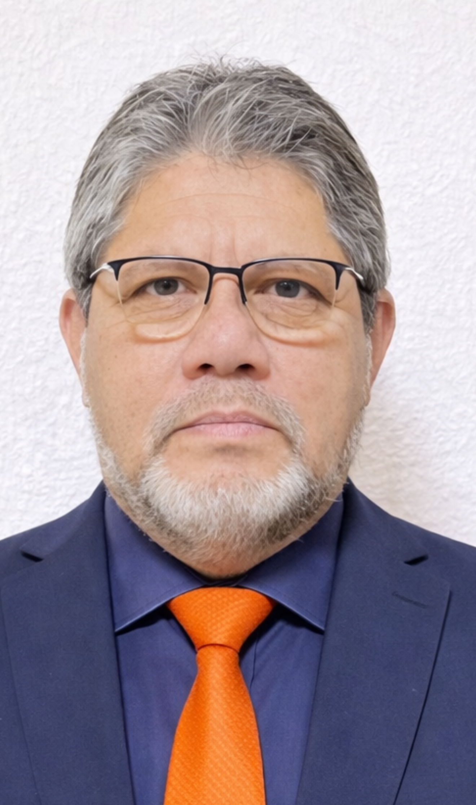

🌐
Consulados modernos
- Ventanilla Única Consular Digital interoperable con entidades del Estado.
- Estándares mínimos de atención, tiempos máximos de respuesta y evaluación pública.
- Capacitación permanente en migración, derechos y gestión de crisis.
Una página con identidad peruana, presencia institucional y una narrativa clara: Ayacucho en la memoria, Chiclayo en el carácter, y una propuesta seria para los peruanos en el exterior.

El diseño combina lenguaje institucional con una estética inspirada en la riqueza visual del Perú: franjas cromáticas, acentos textiles andinos y una paleta que une rojo, azul, dorado y tonos tierra. Nada de circo digital. Belleza con rumbo, que siempre es más elegante que el ruido.
Primero el Estado recupera orden y previsibilidad. Después vienen el crecimiento, la inversión y la infraestructura sostenible. No al fetiche del megaproyecto mágico que aparece como unicornio con casco.
Los peruanos en el exterior no deben ser vistos solo como electores o remitentes de remesas. Son capital humano, redes profesionales, experiencia comparada y una fuerza estratégica para el país.
La página pone en primer plano una idea central: el Perú necesita instituciones que funcionen, un Estado que respete al ciudadano y una representación PEX con seriedad, evidencia y método.
Menos ruido. Más país. La política no debe competir en griterío, sino en claridad, resultados y capacidad de construir.
Rojo institucional, azul de confianza, dorado ceremonial y texturas inspiradas en el Perú profundo para una presencia memorable.
Ayacucho y Chiclayo aparecen como raíz emocional y cultural: memoria, trabajo, tradición y fuerza de carácter.
Este bloque funciona muy bien para fijar posicionamiento en una landing de campaña: transmite serenidad, profesionalismo y contraste frente al espectáculo. Un pequeño antídoto contra la inflación de slogans huecos.